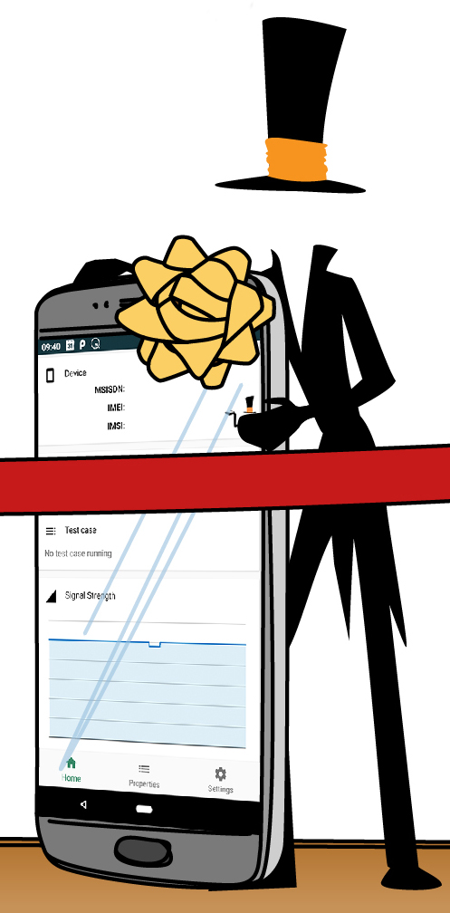
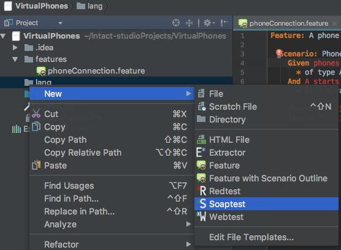
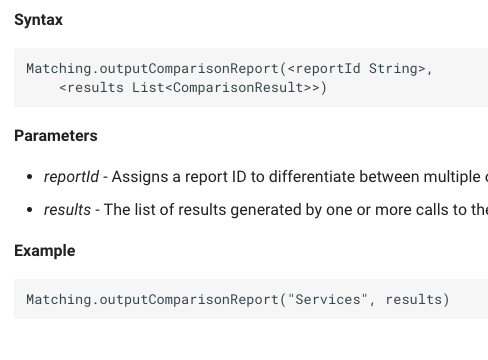
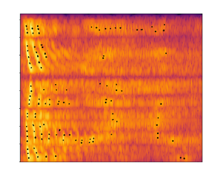

QiTASC Newsroom
Explore articles, tutorial videos and interviews and get to know the QiTASC family, the company and the magic behind our product INTACT®
Find more information in the INTACT® Resource Center

Get to Know INTACT
How to Customize your INTACT® Test Case Execution Experience
Nov 01, 2018
When executing several tests within the same project, it's often necessary to adapt them to changes that arise so that all tests are compatible with each other. INTACT Studio allows you to configure individual scenarios to prioritize test cases, ignore unwanted Scenarios and add custom Context Objects to make sure your tests run smoothly.
Read More

Get to Know INTACT
Take a Quick Tour of INTACT® Studio
Sep 24, 2018
What does an INTACT test case look like? We'll take you on a tour through INTACT Studio and show you how different components, including Feature Files, Stepdefs and configurations look.
Read More

Videos
INTACT® Studio Phone Plugin Demo
Jul 23, 2018
Mihai shows how our Phone Plugin lets you to view a phone's behavior from INTACT Studio, access its properties and even interact with it from your computer. Automated testing of remote phones has never been simpler!
Watch

Read More
New Feature
Managing Phones with the New INTACT® Mobile App
Jul 10, 2018
With the introduction of the new Mobile App, users now have access to a cleaner interface and expanded functionality that provides useful information about phone characteristics and communication with INTACT.
Read More

Get to Know INTACT
Continuous Integration (Jenkins) With INTACT®
May 23, 2018
In this tutorial, we’ll show you how to incorporate INTACT into the Jenkins continuous integration framework. Try our sample project out for yourself and see how easy it is to further automate your testing!
Read More

Videos
INTACT® Studio Tips & Tricks
May 10, 2018
Watch Mihai from Development demonstrate INTACT Studio tips & tricks for creating and managing INTACT test cases.
Watch

Get To Know INTACT
Eight Important Automated Testing Scenarios Where INTACT® Excels
Apr 12, 2018
Depending on the behaviours you're testing and whether they represent ongoing activities or single points in time, you might use INTACT in many different ways. Here we cover eight of the most common automation use cases, including core network testing, Internet of Things and charging conformity.
Read More

Read More
How-To Guides & Learning
INTACT® Virtual Phones Tutorial
Mar 20, 2018
With the flick of a configuration switch, INTACT allows you to change between using virtual phones and real phones in your testing environment. This tutorial walks you through setting up a project and creating your own custom steps to automate virtual phones.
Read More

Videos
INTACT® Studio - Custom Plugins
Oct 22, 2018
Because INTACT Studio is based on the IntelliJ IDEA framework, it’s easy to extend it with your own plugins or plugins from the IntelliJ repository. Watch Mihai show you how to customize your INTACT Studio experience and improve your productivity.
Watch

Videos
Video Tutorial - Executing INTACT® Test Cases
Sep 04, 2018
In this tutorial, Mihai demonstrates how to execute INTACT Webtest test cases, including an Internet of Things platform that checks a thermostat's temperature. The video also provides examples of how to use Context Objects.
Watch
New Feature
Mixing Work with Fun - QiTASC in Styria
Jul 17, 2018
Once or twice a year, development, testing and business as usual stops for a couple of days so that the whole QiTASC team can get together for workshops and to catch up with colleagues from Vienna, Düsseldorf -- and beyond -- over delicious meals and during recreational activities.
Read More
New Feature
Remote Apptest with INTACT®
Jul 02, 2018
Test your apps remotely and interact with the phones as if they're right in front of you! See what we've changed about Apptest and how simple it is to run test cases from anywhere in the world.
Read More

Get to Know INTACT
Concise, Reusable Test Cases - How Compound Steps Can Simplify Your Test Design
May 15, 2018
Compound steps facilitate cleaner, easier-to-read and manage test cases. In this article, we'll show you how compound steps differ from standard keyword-based frameworks and demonstrate their use in parallel execution while also allowing users to seamlessly switch between virtual and real devices.
Read More
Get to Know QiTASC
The People of QiTASC
Apr 30, 2018
Developing complex automation testing solutions requires expertise that covers different fields of knowledge. Here at QiTASC, our international team consists of people with diverse technical backgrounds that allow us to work across disciplines to create powerful INTACT features.
Read More

Videos
Introduction to INTACT® Studio
Apr 05, 2018
In our first tutorial video, Mihai from development shows you around INTACT Studio. Learn how to set up your first project and create basic test cases as well as some useful shortcuts and tricks!
Watch

Get to Know INTACT
INTACT® Studio Tips and Tricks
Oct 08, 2018
We've collected some of the most commonly-used INTACT Studio shortcuts that customers use in their projects. These shortcuts support finding files and steps, refactoring and edit test cases, inspecting errors as well as creating documentation and notes that help you understand your projects better. Take a look through these shortcuts and try them out for yourself!
Read More

Get to Know QiTASC
Theo's Summer Internship at QiTASC
Aug 06, 2018
In Austria, summer internships (Praktika) are a prerequisite for graduation from technical high schools (HTL). Therefore, every summer, QiTASC offers a couple of internship placements for high school students. This July, we welcomed 15-year-old Theo to our Vienna office. During his month-long internship, Theo had the opportunity to get familiar with INTACT and learn what it's like to work at a startup.
Read More

New Feature
Automated Announcement Verification with the INTACT® Audio Plugin
Jul 12, 2018
Verifying audio content, such as IVR prompts is one of many tasks that INTACT automates. This means audio content no longer needs to be checked manually, which significantly reduces the amount of time spent checking test results.
Read More

Get to Know QiTASC
Transparent Project Reporting with QiTASC ConQlude
Jun 11, 2018
Managing test data, reports and tracking the progress of your project has never been easier or more transparent. Whether you're quickly looking up a test's result, or exporting large data sets to an external database, ConQlude simplifies your workflow and provides you with easy-to-understand information.
Read More
Get to Know QiTASC
From Athens to Vienna - Costas Joins the QiTASC Development Team
May 14, 2018
In the summer of 2016, Costas joined the QiTASC development team. Since then, he's worked on projects covering a range of INTACT functionality. Meet Costas and find out what he enjoys most about developing for QiTASC!
Read More

Read More
Get to Know INTACT
Introducing the QiTASC Resource Center
Apr 18, 2018
Do you prefer to learn with step-by-step instructions, or do you enjoy figuring things out on your own? This year we launched the QiTASC Resource Center, which contains all our manuals, tutorials and other helpful documents.
Read More

Read More
New Feature
The INTACT® Audio Plugin
Mar 26, 2018
At QiTASC we've created an Audio Plugin that is currently used for monitoring speech channel quality as well as recording and comparing audio files (Audio Fingerprinting) within INTACT test cases. Read on to find out how these new features work.
Read More